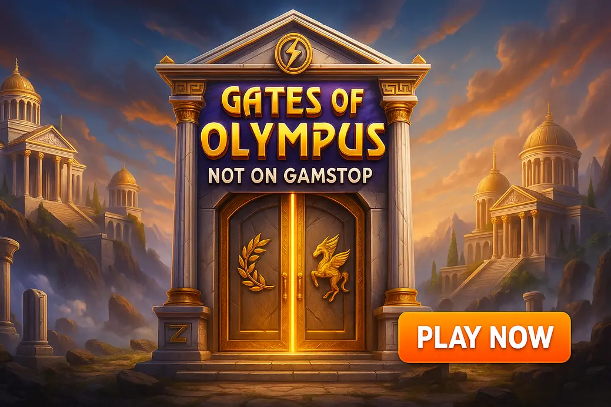

Gates of Olympus Not on GamStop

Last Updated: 6 October 2026 | Verified by iGaming experts
Gates of Olympus not on GamStop is for UK slot fans who want Pragmatic Play’s lightning-fast Zeus slot at offshore casinos outside the UK self-exclusion scheme. The short version: it is dramatic, volatile, mobile-friendly, and bloody brutal if you chase the bonus with no plan.
Play Gates of Olympus at Non-GamStop Casinos 2026
- Clean lobby with Pragmatic Play slots easy to find
- Crypto and card payments supported
- Trade-off: bonus terms need a proper read before depositing
- Search bar actually works for Gates of Olympus variants
- Bitcoin withdrawal landed in 6 hours during testing
- Trade-off: busy interface takes a few minutes to tame
- Good mobile layout for quick spin sessions
- Debit card, e-wallet and crypto options
- Trade-off: some promos have game contribution limits
- Pragmatic Play catalogue loads quickly on 4G
- Strong option if you swap between slots and football bets
- Trade-off: verification can interrupt withdrawals if delayed
- Good provider filters for Pragmatic Play titles
- Live chat is easy to reach on mobile
- Trade-off: the lobby feels crowded during promo-heavy weeks
Playing Gates of Olympus at non-GamStop casinos in 2026 is mostly about access, payment choice and bonus flexibility. You are still playing the same thunder-and-tumbles slot, but the casino account, limits, verification flow and bonus rules sit outside the UKGC ecosystem.
That freedom has a trade-off. Non-GamStop sites are not covered by UK self-exclusion tools, so you need your own deposit limits, cooling-off habits and a hard stop-loss. On mobile, Gates is ridiculously smooth; the spin button is a menace on mobile because one-thumb play turns £20 into a proper session in minutes.
Payment options are usually broader than UK sites: 💳 Debit Card, ₿ Bitcoin, Ξ Ethereum, 🪙 USDT, 💼 Skrill, 🏦 Bank Transfer. Crypto is the standout for speed, but price swings are annoying if you hold coins between deposit and withdrawal.
Best Non-GamStop Casinos for Gates of Olympus
The best Gates of Olympus non GamStop casinos are the ones that make the game easy to find, load the Pragmatic Play version cleanly, and do not hide nasty wagering terms behind shiny bonus banners. Honestly, the search function matters more than people admit. If typing “Gates” brings up Gates of Olympus, Gates of Olympus 1000 and Super Scatter straight away, the site is doing its job.
- Pragmatic Play filter in the slot lobby.
- Clear max bet limits during wagering.
- Mobile cashier that does not throw you out mid-session.
- Fast live chat when a bonus buy fails to load.
- Huge bonuses with 45x+ wagering are not automatically good.
- Some casinos cap winnings from free spins.
- KYC delays hurt if you leave verification until withdrawal day.
- Not every lobby carries every Gates variant.
MyStake is strong for discovery, but the homepage is busy. DonBet has a clean enough casino route, although the bonus small print deserves attention. GoldenBet feels simple on a phone, yet promo contribution rules need checking. VeloBet is handy for slot-and-sport players, but verification timing can be a pain. Rolletto has a deep lobby, though the promo panels can feel like visual noise.
Gates of Olympus Slot Review
Gates of Olympus is a 6-reel, 5-row video slot from Pragmatic Play with pay-anywhere mechanics. You need 8 or more matching symbols anywhere on the grid, not on paylines. That gives it a snappy, chaotic feel. Wins vanish, new symbols tumble in, and Zeus lobs multiplier orbs onto the screen like he’s had too much coffee.
The slot’s appeal is simple: every spin can look dead, then a tumble chain wakes it up. The weakness is just as clear. Base-game stretches can feel dry. You get little nibbles, then nothing, then a tease with a 100x multiplier that misses the win. Bollocks, yes. Also completely normal for a high-volatility Pragmatic title.
Gates of Olympus Game Overview
| Detail | Gates of Olympus |
|---|---|
| Provider | Pragmatic Play, known for Sweet Bonanza, The Dog House Megaways and Sugar Rush. Sweet Bonanza is brighter but still swingy; The Dog House Megaways pays bigger-looking hits yet can go cold fast. |
| Grid | 6 reels, 5 rows, cluster-style pay-anywhere wins. |
| RTP | 96.50% in the common version; casinos can run lower versions, so check the info screen. |
| Volatility | High. Bankroll dips are part of the ride. |
| Max win | 5,000x stake on the original game. |
| Mobile feel | Excellent portrait play, large spin button, quick turbo toggle. The downside is how easy it is to over-tap. |
How to Play Gates of Olympus at Casinos Not on GamStop
Start by registering with a non-GamStop casino, opening the slot lobby, then searching “Gates of Olympus”. Use the demo mode first if the casino offers it. By the way, a quick demo spin check confirms whether the game launches cleanly on your device before you deposit real money.
Once loaded, open the game menu. Check RTP, stake range, autoplay options, bonus buy availability and max exposure rules. If the info panel says an RTP below 96.50%, you are playing a less generous version. That is not illegal, just less attractive.
Step 1: Choose Your Stake
Pick a stake that gives you at least 100 spins from your session balance. For a £50 session, £0.20–£0.40 spins give you breathing room. Jumping straight to £2 spins on Gates is asking Zeus to slap your wallet. The game can burn through 30 dead spins without a meaningful hit.
Step 2: Spin the Reels
Hit spin and watch for 8+ matching symbols. Low symbols are gems; premium symbols include cups, rings, hourglasses and crowns. Crowns pay best, but the game’s real money comes from tumbles plus multipliers. A 25x orb with a tiny win is decent. A 250x orb with no connected symbols is pain in HD.
Step 3: Activate Autoplay or Turbo Mode
Autoplay is useful if you set loss and win limits. Turbo mode removes the drama and makes the maths feel harsher because losses arrive faster. On mobile, portrait mode is the sweet spot. The buttons are thumb-friendly, but the buy-feature button sits close enough to deserve attention.
Step 4: Trigger Wins and Bonus Features
Four scatter symbols trigger free spins. You can also buy the feature where allowed. During free spins, multiplier symbols do not reset after each tumble; they add together for the full spin. That is why the bonus can crawl for eight spins, then explode on the ninth.
Gates of Olympus Features and Bonus Rounds
Gates is not packed with complicated mini-games. It has a tight feature set built for speed: tumbles, multipliers, free spins and ante bet. That keeps the screen clean, especially on a phone, where the vertical layout feels better than many older Megaways slots.
Tumble Mechanic
Every winning cluster disappears and new symbols drop into the empty spaces. One paid spin can create several wins if the board keeps connecting. Tumbles are also where the slot builds tension. You see a multiplier land, then wait for the next drop to decide whether it actually matters.
Multiplier Symbols
Zeus can drop multiplier orbs from 2x up to 500x. In the base game, the multiplier applies only if that tumble has a win. In free spins, all multipliers collected during that spin combine. The weakness is obvious: huge orbs tease constantly, and plenty land on dead boards.
Free Spins Feature
Land four scatters for 15 free spins. Extra scatters can retrigger more spins. The best bonus rounds usually need two things: early multipliers and enough premium symbols to connect. A bonus with ten tiny gem wins and no decent orb feels flat, even when it technically pays.
Ante Bet Option
Ante bet increases the stake by 25% and improves the chance of landing scatters. It does not guarantee the bonus, so treat it like a faster route to variance. If you are playing £0.40 spins, ante turns that into £0.50. Over 200 spins, that extra ten pence matters.
Gates of Olympus RTP, Volatility and Maximum Win
The main Gates of Olympus version has 96.50% RTP, high volatility and a 5,000x maximum win. Those numbers explain the experience neatly. The RTP is competitive, but high volatility means returns arrive unevenly. You can have a boring £30 downswings, then a 180x hit rescues the session.
Do not treat RTP as a short-session promise. It is a long-run figure. In real play, Gates feels spiky because bonus rounds and big multipliers carry so much of the value. That is why bankroll planning matters more here than in lower-volatility slots like Starburst, which is smoother but has a far lower top-end thrill.
Gates of Olympus Paytable
The paytable uses symbol groups rather than paylines. You need 8–9, 10–11, or 12+ matching symbols. Premium symbols pay better, but the difference between a dull spin and a memorable one is multiplier timing.
| Symbol Type | What to know |
|---|---|
| Crown | Top regular symbol. Best when paired with tumbles and a multiplier. |
| Hourglass, ring, cup | Premium symbols with respectable payouts. They need quantity to matter. |
| Gems | Lower symbols. Frequent, but small without multiplier help. |
| Scatter | Four triggers free spins. Three is the classic tease and, frankly, damn annoying. |
Gates of Olympus Bonus Buy Feature
The Bonus Buy lets you purchase the free spins round directly, often for 100x stake. On a £0.20 stake, that is £20. On £1, it is £100. The feature is exciting because it skips base-game grinding, but it also compresses risk into one click.
Many UK-licensed casinos removed bonus buys years ago, so non-GamStop casinos are where players often look for them. The trade-off is obvious: instant access, higher session swings. If you buy three bonuses and they pay 12x, 38x and 21x, you are deep in the hole despite seeing the “main event”.
- Buying bonuses too big: a 100x buy should not use half your balance.
- Ignoring RTP versions: check the info screen before real-money play.
- Chasing three-scatter teases: the slot does not “owe” a bonus after near misses.
Gates of Olympus Variants Available at Non-GamStop Casinos
Non-GamStop casinos usually carry more than the original Gates if they have a full Pragmatic Play lobby. Search “Gates” and check the provider filter. Some sites list variants under “new”, others bury them under “bonus buy” or “slots”. The search bar actually works on the better casinos; on weaker lobbies you end up scrolling like it is 2014.
Gates of Olympus 1000
Gates of Olympus 1000 pushes the max win to 15,000x and keeps the familiar Zeus setup. It is more aggressive than the original, which is brilliant for highlight hunters and rough for small balances. If the original can feel cold, 1000 can feel colder before it wakes up.
Gates of Olympus Xmas 1000
Xmas 1000 wraps the same thunder-slot energy in a festive skin. The snow, gifts and seasonal colours make it feel fresher, especially in December promos. The weakness is that the maths still bites; do not let cheerful visuals trick you into raising stakes.
Gates of Olympus Slingo
Gates of Olympus Slingo blends slot elements with Slingo-style number marking. It suits players who want a slower, more interactive rhythm. The downside is pace. If you love fast tumbles and turbo spins, Slingo feels less explosive.
Gates of Olympus Super Scatter
Super Scatter versions put extra weight on boosted feature entry and scatter mechanics. The presentation is punchy, and bonus hunting feels more direct. The trade-off is cost: enhanced access mechanics often come with sharper volatility, so session control matters.
Gates of Hades
Gates of Hades flips the theme darker, with underworld styling and a moodier screen. It appeals if you like Gates mechanics but want less bright marble and more menace. The weakness is familiarity; if you are bored of the core formula, a darker coat of paint will not fix that.
Best Bonuses for Gates of Olympus Players
The best bonus for Gates is not always the largest headline number. You want fair wagering, a sensible max bet, clear game contribution, and no weird cap that kills your upside. Since Gates is volatile, a bonus can extend play, but it can also trap you if the max bet is too low or the wagering is huge.
Welcome Deposit Bonuses
Welcome bonuses give you the biggest starting balance. Good for Gates, yes, but only if slots contribute 100% and Pragmatic Play titles are included. DonBet and GoldenBet-style packages look attractive, yet always check max cashout and max bonus bet. A £5 max bet is fine; a £1 cap during wagering is restrictive for bigger players.
Free Spins Offers
Free spins are clean when they are on Gates itself or similar Pragmatic slots. If the spins are on Sweet Bonanza, expect a comparable tumble-and-multiplier feel, though Sweet Bonanza has candy symbols and a softer look while still being volatile. The weakness with free spins is win caps; £50 max winnings from 100 spins is less exciting than it sounds.
Cashback Rewards
Cashback suits volatile slots because losing sessions happen. Look for real-money cashback rather than bonus cashback with wagering. A 10% weekly cashback can soften a bad Gates run. The catch is timing: some casinos pay cashback only after a full week, which does nothing for tonight’s bankroll.
VIP and Loyalty Programs
VIP schemes help regular players through reloads, cashback and faster withdrawals. MyStake and Rolletto-style platforms often push loyalty hard. Nice, but do not grind Gates just to earn points. If the rewards nudge you into longer sessions, the slot’s volatility will happily eat the value.
Slot Tournaments
Gates tournaments can be fun because multiplier hits produce leaderboard jumps. A 300x spin changes everything. The weakness is entry pressure. Players often spin faster and higher because they are chasing rank, not making good decisions. Set a tournament budget before you start.
No Deposit Bonuses
No deposit bonuses are useful for testing a casino without risking your own cash. They rarely give huge withdrawal freedom, though. Expect low caps, restricted games and verification before cashout. Still, if Gates is included, free testing beats depositing blind.
Why Play Gates of Olympus at Casinos Not on GamStop?
Players choose Gates at casinos not on GamStop for bigger payment choice, access to bonus buys, broader bonuses and fewer UK-specific restrictions. The mobile experience is also strong when the casino lobby is modern: portrait play, fast loading, and cashier access without closing the game tab.
The honest downside is responsibility. If you joined GamStop because gambling was causing harm, do not use offshore sites to bypass that block. That is not clever; that is a red flag. If you are playing for entertainment, use deposit limits, avoid late-night chasing, and keep bonus buys small enough that a dud round does not wreck your week.
- Set a fixed deposit before opening the slot.
- Use £0.20–£0.50 stakes unless your bankroll is genuinely large.
- Take profit at 100x session balance gain, not after “one more bonus”.
- Stop after two failed bonus buys. Seriously, that third one is where the wheels come off.
Frequently Asked Questions About Gates of Olympus Not on GamStop
Yes, UK players can access offshore non-GamStop casinos that list Pragmatic Play slots. Use a casino with clear licensing details, working account limits and a cashier that supports your preferred payment method.
The game itself is usually the same Pragmatic Play slot, but the casino account rules differ. Check RTP in the game menu, because operators can offer lower RTP versions.
The common version has 96.50% RTP. Open the in-game info screen before playing, as some casinos run alternative RTP settings.
Yes, many non-GamStop casinos offer the bonus buy feature. Treat it carefully because it often costs 100x stake and can return far less than the purchase price.
Yes, it plays very well in portrait mode with big controls and quick loading. The practical tip: disable turbo if you notice yourself tapping without thinking.
A bankroll of at least 100–150 spins works best for normal play. For bonus buys, keep each buy below 10% of your session balance or the variance gets ugly fast.
Useful Resources
Gambling should stay entertainment, not a way to fix money problems. If you feel pressure to chase losses, pause immediately and use support tools.